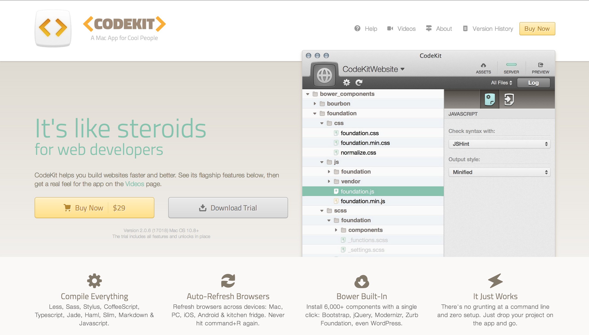
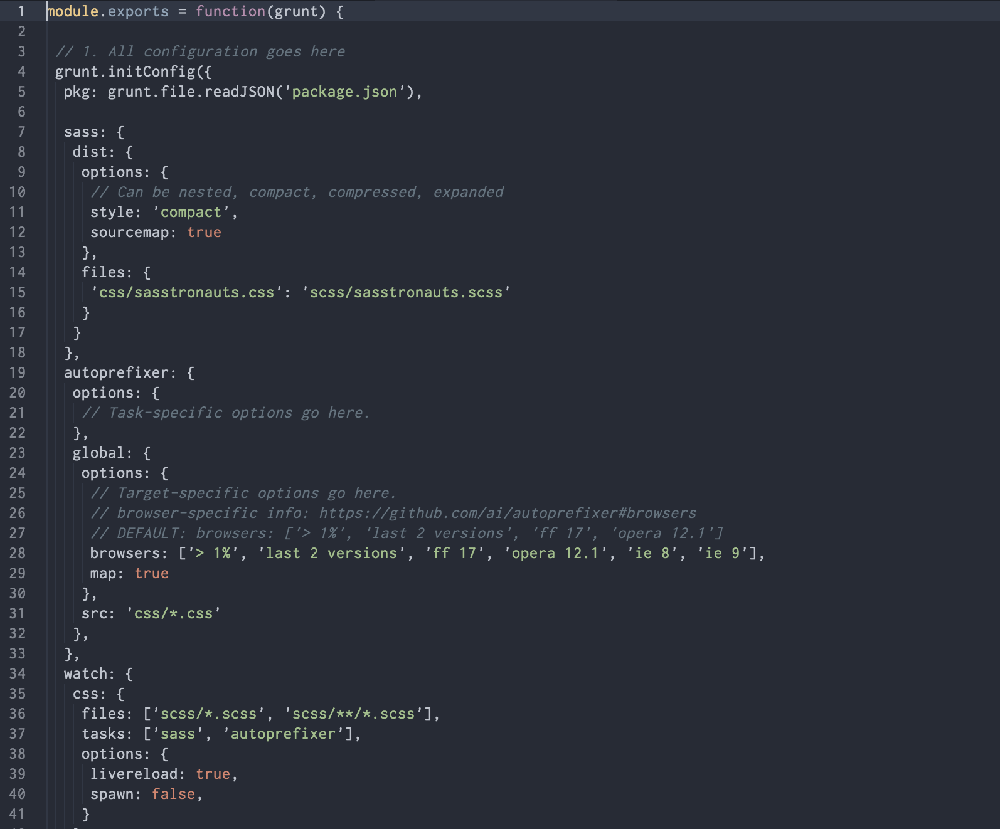

Sasstronauts
Let's test this
Setup
- Apps
- Command Line
Codekit
Command Line

Grunt.js
Preprocessing
- list item
- list item
Demo
blah blah .nyan { position:absolute; }
.test {
top: 3px;
& i {
background: $blue;
}
}
body {
color: #ff0000 !important;
background: red;
}
/* Test comment */
@for $i from $start through $end {
some {
// Test comment
background: $i;
}
}have you noticed it's in 3D*?
* beat that, prezi ;)